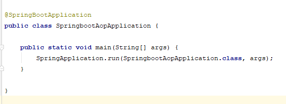
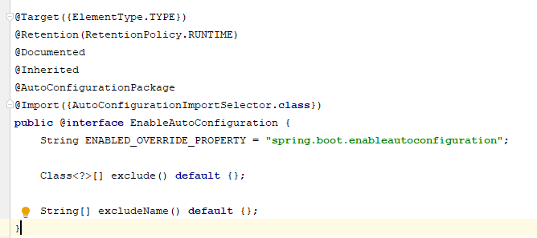
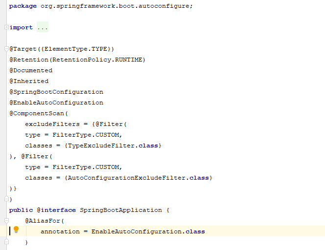

spring boot 它的设计目的就是为例简化开发，开启了各种自动装配，你不想写各种配置文件，引入相关的依赖就能迅速搭建起一个web工程。它采用的是建立生产就绪spring应用程序观点，约定优先于配置的惯例。

我们会发现所有的SpringBoot项目的启动类上都会有一个@SpringBootApplication注解，在这个注解中，有三个最重要的注解：
1. @SpringBootConfiguration
@SpringBootConfiguration继承自@Configuration，二者功能也一致，标注当前类是配置类，
并会将当前类内声明的一个或多个以@Bean注解标记的方法的实例纳入到spring容器中，并且实例名就是方法名。
2. @EnableAutoConfiguration
从字面上看是自动配置的意思，为什么SpringBoot不需要像SSM,SSH那样书写繁多的配置文件就能达到目的呢？答案就在这里。

通过查看源码我们可以发现，该注解上主要有两个注解在起作用：
@AutoConfigurationPackage注解的作用是将 添加该注解的类所在的package 作为 自动配置package 进行管理，也就是说当SpringBoot应用启动时默认会将启动类所在的package作为自动配置的package。
@Import注解的作用是注册bean对象，起着和@Component和@Configuration+@Bean一样的作用，AutoConfigurationImportSelector的作用是扫描META-INF目录下面的spring.factories文件，返回里面配置类的权限类名数组，配合@Import注解将这些类注册到spring容器里面。
3. @ComponentScan
这个注解起到了包扫描的作用，默认扫描当前类所在的包以及所在的子包。

我们通过查看源码可以发现，@ComponentScan里面有个@excludeFilters注解，里面去除了两个过滤器：AutoConfigurationExcludeFilter的作用是声明不用去扫描自动配置的类，因为在@EnableAutoConfiguration注解中已经说到，这个注解就是去扫描所有的配置类，所有这里不用进行二次扫描。
利用TypeExcludeFilter我们可以自定义不扫描哪些类，继承TypeExcludeFilter重写match方法，在该方法里我们可以自定义规则。